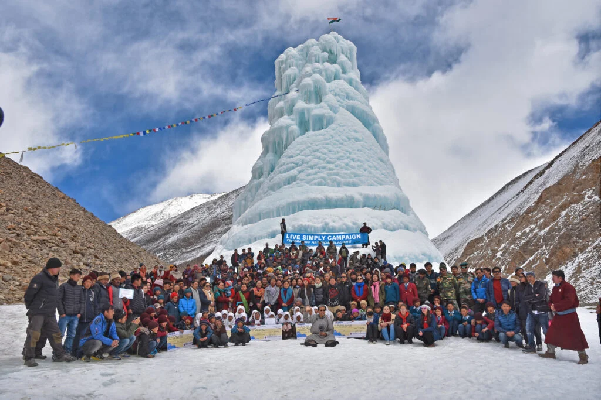
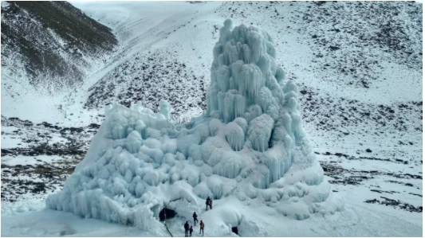
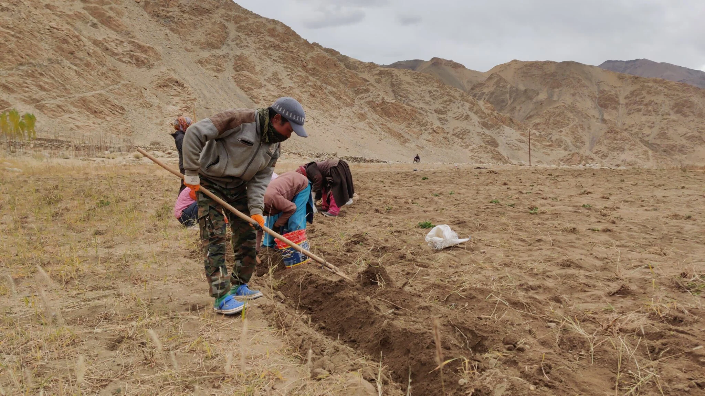
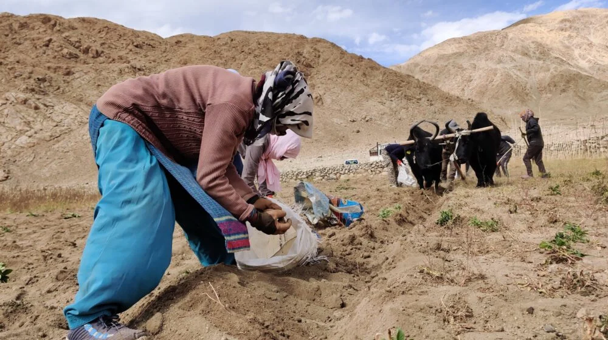

Artificial vertical Glaciers - Ice Stupas for conservation of waste-winter water for irrigation in Spring:
The Ice Stupa artificial glaciers solve the problem of water shortage in the face of climate change- using which the ecologically damaged valleys are being restored. The Ice-stupas use waste-winter-streaming water and store it in the form of conical ice structures resembling a stupa, and melts during the spring, providing water to the farmers in the driest period… when it is most needed. Last year, 16 villages made 21 Ice Stupas and benefitted from it.

Solar Car Shed:
The primary aim of this project is to study and document the methodology of village rehabilitation in the trans-Himalayan region of Ladakh, particularly in the village of Kulum which has been abandoned due to the reason of water scarcity. The project also envisions preparing a list of such water-scarce villages in the region in order to compile a flexible framework that can be applied in the rehabilitation process of villages facing similar challenges. The secondary aim is to empower the tribals of the region through the knowledge sharing of adaptive measures that will build resilience towards climate change on a much wider scale than before. These adaptive measures include the building of ice stupas, implementing modern plantation and irrigation practices, and introducing solar passive design and technology.



High valley desert greening for increasing water absorption and flow reduction in extreme rainfall events - Desert greening with native plants:
Frequent floods due to loose soil, lack of vegetation, and cloud bursts damaged houses and crops. As a counter, HIAL is undertaking the ambitious valley greening and afforestation project. Indigenous Trees will be planted using a mix of innovative techniques and methods. Using Native species for plantation ensures that plants don’t use too much water. Water retention on account of vegetation cover will help in mitigating disasters such as the leaching of nutrients from the soil, water run-off, and damage to houses and property in the event of floods or severe rainfalls. HIAL has a land of 125 acres, out of which roughly 100 acres will be afforested.